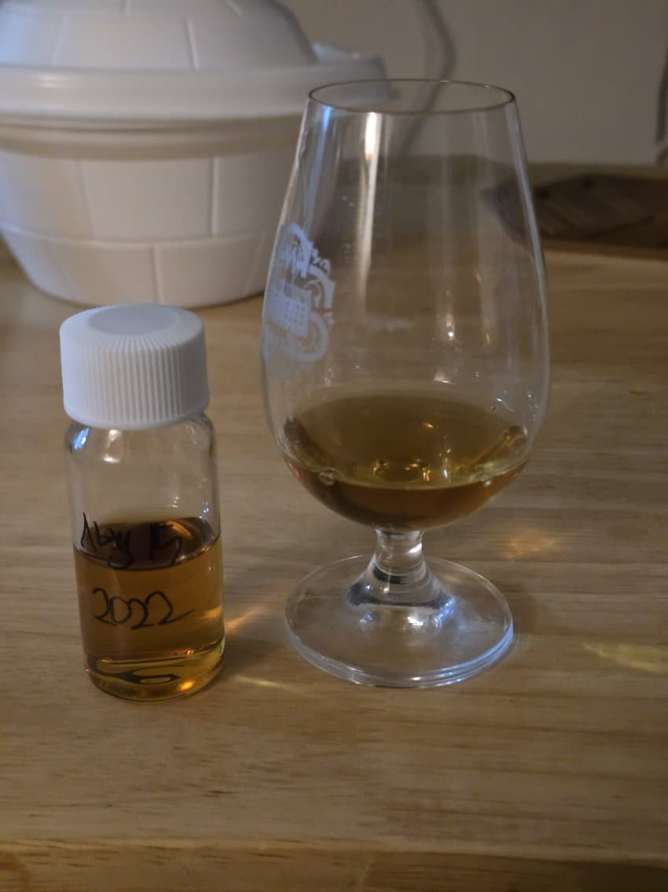

1. 기본 정보
- 이름: 스프링뱅크 15년
- 증류소: 스프링뱅크
- 알코올 도수: 46%
- 숙성 연수: 15년
2. 카테고리 평가
- Nose 유황, 유산취, 적사과, 약간의 쇳내, 체리와 함께 약간의 새콤한 베리류
딱 코를 대자마자 인도네시아 활화산에서 맡았던 유황 냄새가 반겨준다. 뒤이어 애기토 같은 유산취가 좀 느껴지고 이런 냄새들이 좀 익숙해지면 적사과가 연상된다. 스뱅 특유의 쇳내와 함께 가벼운 향들이 살짝씩 느껴지는데, 체리와 빨간 베리류들이 스쳐지나가는 듯 하다.
- Palate 약간의 황, 탄닌, 적사과, 미세한 시트러스
맛에서는 향에서 우려스러웠던 것과는 달리 황이 그리 세진 않다. 제일 먼저 적사과와 같은 상큼한 맛, 그 이후로 황이 슬쩍 지나간다. 생각보다는 드라이하고 탄닌의 쓴맛이 느껴진다.
- Finish 스뱅 펑크, 적사과, 황
향과 맛에서는 어디 갔나 했던 스뱅 특유의 펑크가 피니시에서 드러난다. 날카로운 쇳내와 적당한 더티함이 잠깐 여운을 남기는가 싶더니 적사과의 단향을 슬쩍 보여준 후에 다시 옅은 황으로 돌아온다. 황이 좀 옅어진 이후에는 탄닌의 쓴맛이 입안에 계속 남는다.
3. 최종 점수
- 83점
4. 총평
- "엔비디아 풀롱이 마려운 위스키"
기대했던 악명을 나름 충족시켜주었다. 열자마자 반겨주는 황의 뉘앙스는 한잔을 온전히 비울 때까지 힘을 잃지 않았다. 나름 최대한 빙글빙글 돌려가며 황냄새를 빼려고 노력해 보았으나 짧은 시음 시간에 황 뉘앙스를 빼기는 버거웠다.
이 돈을 주고 사겠냐? no
다른 15년 급을 제치고 얘를 사겠냐? no
나중에 인도네시아 화산을 다시 방문할 일이 있으면 그때 들고가봐야겟다. 비슷한 냄새에 피로해진다면 다른 향이 느껴질 수도 있겠지
댓글 5개